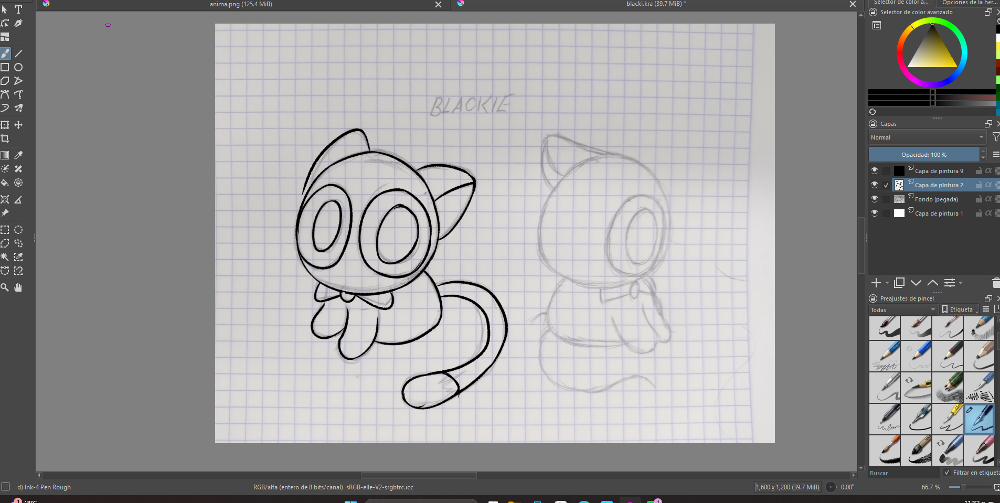
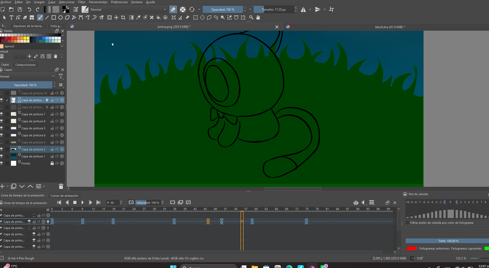
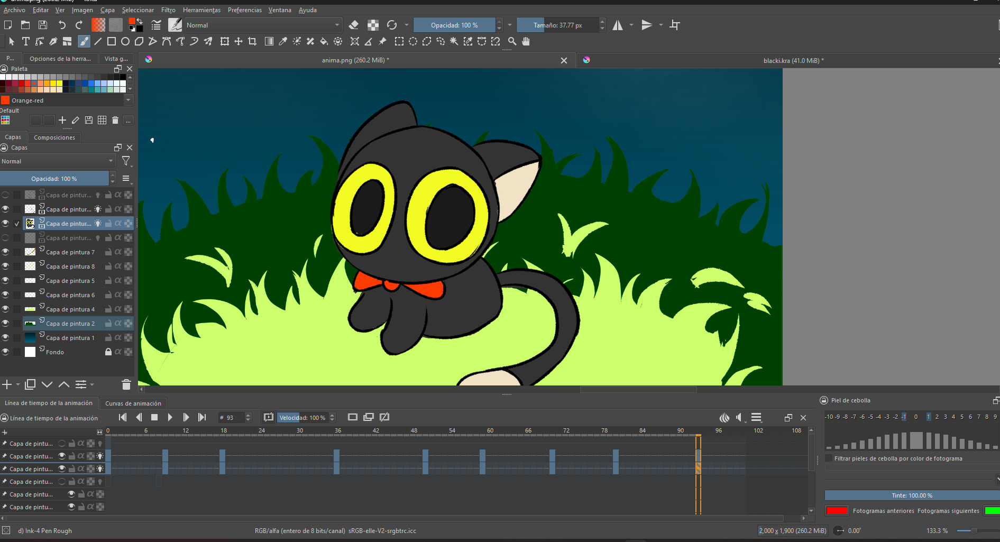
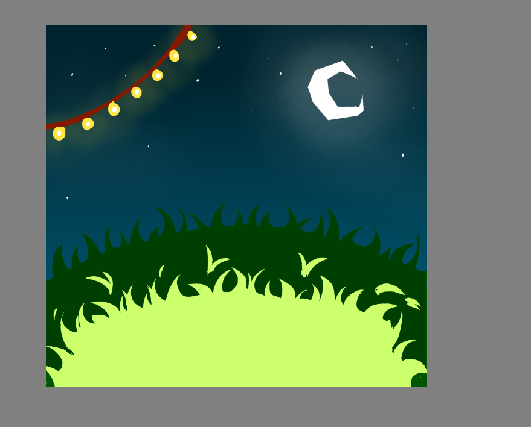
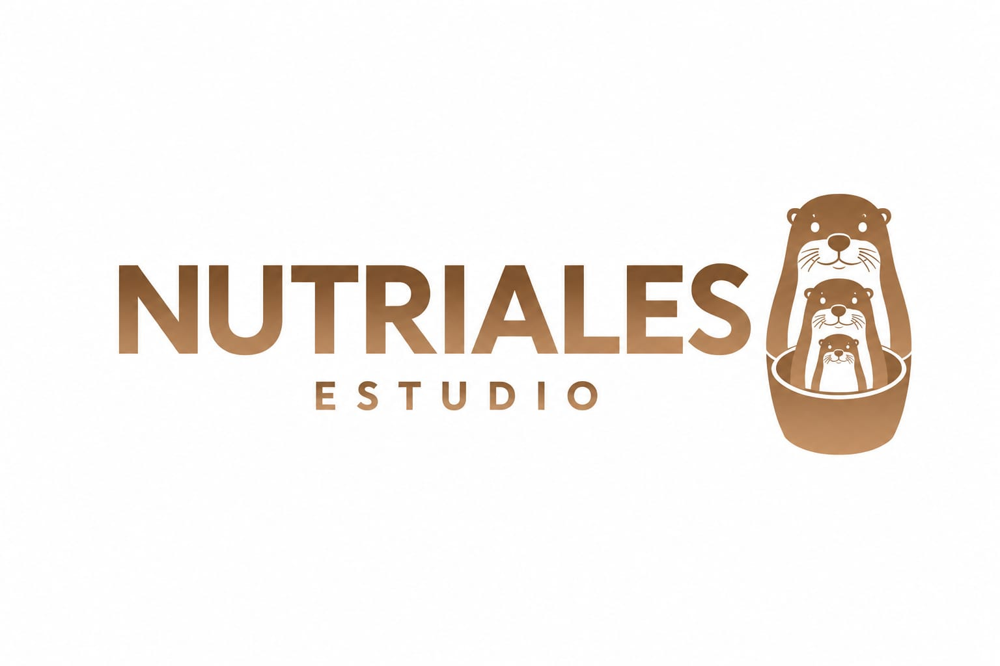

por:NUTRIALES ESTUDIO
Nosotros somos NUTRIALES ESTUDIO una empresa dedicada a hacer cortos de animacion,en esta ocasion estamos felices de presentarles nuestro mas reciente proyecto nombrado "el gato del campo".este nos presenta un gato llamado blacky haciendo su "rutina" nocturna en la naturaleza
Como todo corto animado este pasa por un proceso creativo para despues ejecutarse... Primero decidimos hacer un gato ya que en nuestro estudio nos gustan mucho los gatos,el color negro lo elegimos ya que representa la noche y algo que es timido,con ojos amarillos que contrastan con su negro representando una gran calma...nuestro objetivo con esta animacion solamente era representar una noche calmada,con paisaje tranquilo y nada de preocupaciones....Para ejecutar la idea utilizamos el software krita que nos permitio hacer la animacion mas rapidamente gracias a sus herramientas y traer nuestra idea a la vida




"La idea del proyecto me gusto mucho porque es relajante".
"Le pusimos mucho corazon al proyecto porque algo que a todos nos gusto".
"Lo que mas me gusto del proyecto fue todo el proceso creativo detras de nuestra animacion".

Integrantes:Julian,Isaac,Elena
Grupo:6B
COBAEP PLANTEL 2 ANGELOPOLIS
Paginas Web